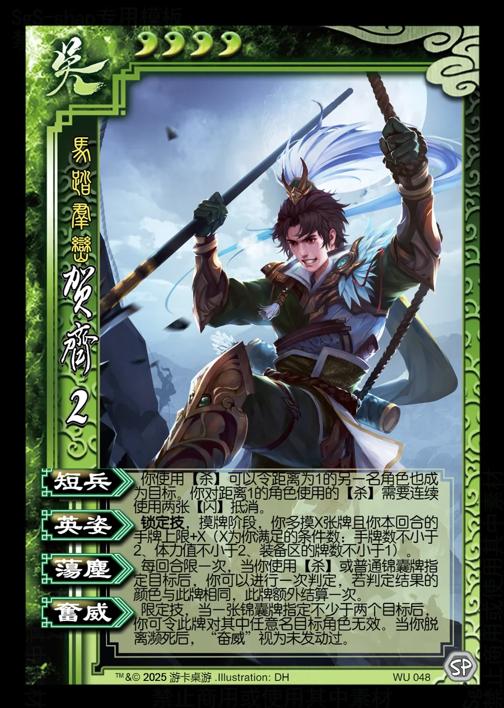

点击卡面查看大图
吴
贺齐
♥4 技能卡马踏群峦
短兵衍生
你使用【杀】可以令距离为1的另一名角色也成为目标。你对距离1的角色使用的【杀】需要连续使用两张【闪】抵消。
英姿锁定技衍生
锁定技，摸牌阶段，你多摸X张牌且你本回合的手牌上限+X（X为你满足的条件数：手牌数不小于2、体力值不小于2、装备区的牌数不小于1）。
荡尘衍生
每回合限一次，当你使用【杀】或普通锦囊牌指定目标后，你可以进行一次判定，若判定结果的颜色与此牌相同，此牌额外结算一次。
奋威衍生
限定技，当一张锦囊牌指定不少于两个目标后，你可令此牌对其中任意名目标角色无效。当你脱离濒死后，“奋威”视为未发动过。